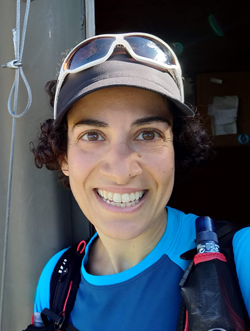

Yeara KozlovPhD Candidate for Computer Science Computer Graphics Lab ETH Zürich yeara.kozlov[at]gmail.com |
 |
I’m finishing my PhD studies at the Computer Graphics Lab at ETH Zürich and Disney Research|Studios. My research focused on capturing the physics of human faces. I was supervised by Dr. Thabo Beeler and Dr. Derek Bradley from the Capture and Effects group at Disney Research|Studios, and Prof. Markus Gross of the Computer Graphics Lab at ETH Zürich. My research interests include human performance capture, machine learning and physically based simulation. Previously, I completed a M.Sc. in Visual Computing at Saarland University and Max Planck Institute for Informatics in Saarbrücken, Germany. I received a B.Sc. in Physics from the Technion, Israel.
Throughout my PhD studies I was one of the co-leaders of CSNOW, the Network of Women in Computer Science of the Computer Science Department at ETH Zürich. During my three year term, I overhauled CSNOW’s activities, offerings and public identity and saw an increase of up to 250% of participation in our events.
Outside work I practice mountain sports to a high level and I built a campervan, both are documented on instagram.
Y. Kozlov, D. Bradley, M. Bächer, B. Thomaszewski, T. and M. Gross.
Enriching Facial Blendshape Rigs with Physical Simulation.
Proceedings of Eurographics (Lyon,France,, April 24-28, 2017), Computer Graphics Forum, vol. 36, no. 2
[pdf] [video] [cgl website] [disney research website] [bib]
A. Bermano, T. Beeler, Y. Kozlov, D. Bradley, B. Bickel, M. Gross
Detailed Spatio-Temporal Reconstruction of Eyelids
Proceedings of ACM SIGGRAPH (Los Angeles, USA, August 9-13, 2015)
[pdf] [cgl website] [disney research website] [bib]
Y. Kozlov, H. Xu, M. Bächer, D. Bradley, M. Gross and T. Beeler
Data-Driven Physical Face Inversion.
2019, arXiv:1907.10402
[arXiv]
Kozlov, Y., Esturo, J. M., Seidel, H. P., & Weinkauf, T.
Regularized Harmonic Surface Deformation.
Technical report: arXiv preprint arXiv:1408.3326.
[pdf] [arXiv]